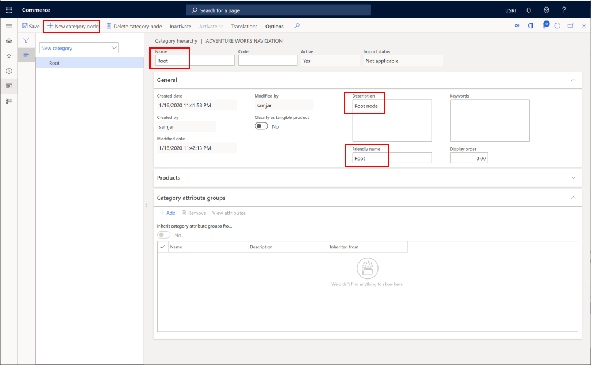
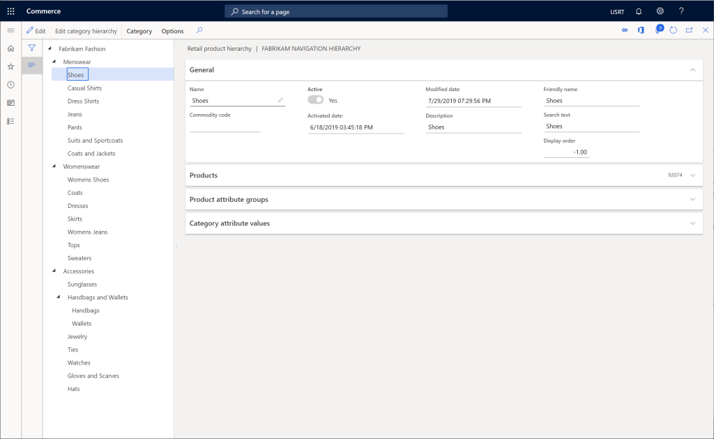
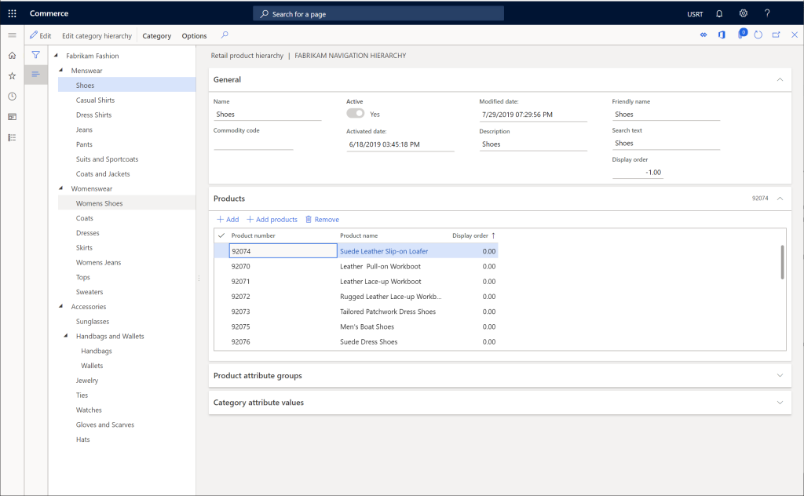
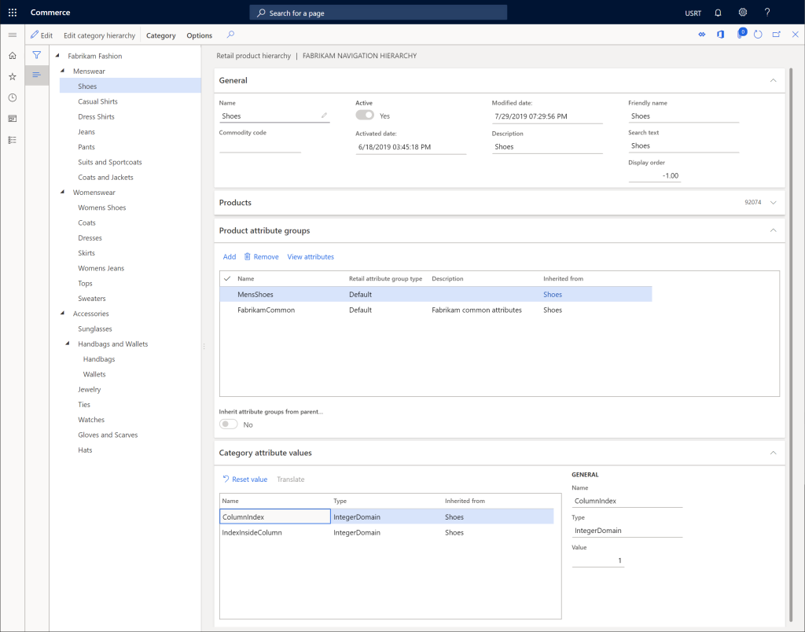

Eine Kanalnavigationshierarchie erstellen
Important
Dynamics 365 Retail ist jetzt Dynamics 365 Commerce und bietet umfassende Handelsfunktionen für alle Kanäle – von E-Commerce über Shops bis hin zu Callcentern. Weitere Informationen zu diesen Änderungen finden Sie unter Microsoft Dynamics 365 Commerce.
In diesem Thema wird beschrieben, wie eine Kanalnavigationshierarchie in Microsoft Dynamics 365 Commerce erstellt wird.
Übersicht
Eine Kanalnavigationshierarchie dient zur Gruppierung und Organisierung von Produkten in Kategorien, sodass die Produkte online oder an einer Verkaufsstelle (POS) durchsucht werden können.
Eine Kanalnavigationshierarchie erstellen
Um eine Kanalnavigationshierarchie zu erstellen, führen Sie die folgenden Schritte aus.
- Gehen Sie im Navigationsbereich zu Module > Retail und Commerce > Produkte und Kategorien > Kanalnavigationskategorien.
- Wählen Sie im Aktivitätsbereich Neu aus.
- Geben Sie im Kästchen Name einen Namen ein.
- Geben Sie im Kästchen Beschreibung eine Beschreibung ein.
- Wählen Sie Erstellen aus.
- Wählen Sie im Aktionsbereich Neuer Kategorieknoten, um einen Stammknoten zu erstellen.
- Geben Sie im Kästchen Name einen Namen ein.
- Geben Sie im Kästchen Beschreibung eine Beschreibung ein.
- Geben Sie in das Feld Anzeigename einen Anzeigename ein.
- Wählen Sie im Aktionsbereich Speichern aus.
Die folgende Abbildung zeigt einen beispielhaften Stammknoten.

Navigationskategorieknoten erstellen
Gehen Sie folgendermaßen vor, um zusätzliche Navigationskategorieknoten zu erstellen, um die Produktkategorien auf dem Kanal darzustellen.
- Wählen Sie im Navigationsbereich den übergeordneten Knoten aus, dem Sie eine Kategorie hinzufügen möchten.
- Klicken Sie im Aktivitätsbereich auf Neuer Kategorieknoten.
- Geben Sie im Kästchen Name einen Namen ein.
- Geben Sie im Kästchen Beschreibung eine Beschreibung ein.
- Geben Sie in das Feld Anzeigename einen Anzeigename ein.
- Geben Sie im Feld Anzeigereihenfolge eine Anzeigereihenfolge ein (optional).
- Wählen Sie im Aktionsbereich Speichern aus.
Das folgende Bild zeigt ein Beispiel einer vollständigen Kanalnavigationshierarchie.

Produkte zu Kategorieknoten hinzufügen
Gehen Sie folgendermaßen vor, um Produkte zu Kategorieknoten hinzuzufügen.
- Wählen Sie einen Kategorieknoten aus.
- Wählen Sie unter Produkte die Option Hinzufügen aus.
- Suchen Sie die neuen Produkte, die Sie hinzufügen möchten, anhand der Produktnummer oder des Produktnamens und wählen Sie dann OK aus.
- Wählen Sie im Aktionsbereich Speichern aus.
Note
Das Hinzufügen von Produkten zu einem Knoten in der Kanalnavigationshierarchie reicht nicht aus, damit die Produkte in einem ausgewählten Kanal angezeigt werden. Die Produkte müssen auch zu einem Produkt sortiert werden.
Das folgende Bild zeigt einen Beispielknoten mit hinzugefügten Produkten.

Produktattributgruppen zu Kategorieknoten hinzufügen
Note
Attributgruppen müssen erstellt werden, bevor Sie sie einem Knoten in der Kanalnavigationshierarchie hinzufügen können.
Befolgen Sie diese Schritte, um ein Produkt einer Attributgruppe zu einem Kategorieknoten hinzuzufügen.
- Wählen Sie einen Kategorieknoten aus.
- Wählen Sie unter Produktattributgruppe die Option Hinzufügen.
- Suchen Sie die Attributgruppen, die Sie hinzufügen möchten, und wählen Sie dann OK.
- Wählen Sie im Aktionsbereich Speichern aus.
Das folgende Bild zeigt einen Beispielknoten mit hinzugefügten Produktattributgruppen.
